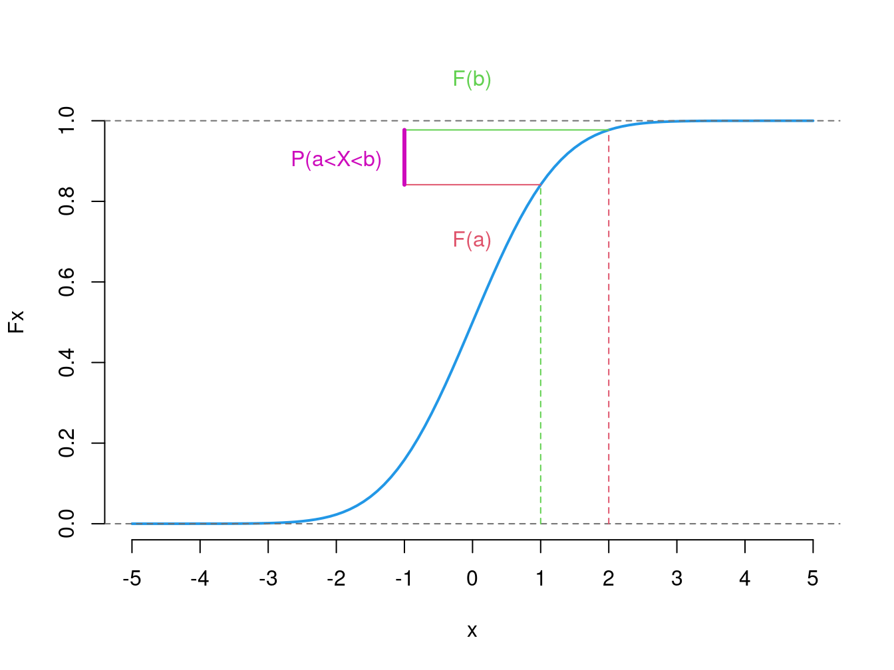

Chapter 4 Grenzwertsätze
Wir haben bereits gesehen, dass empirisch\(\not=\)theoretisch, zumindest nicht ganz. Wie wollen wir dann überhaupt irgendwas über die Grundgesamtheit anhand einer Stichprobe verstehen?
Nun, zum Glück gibt es mathematische Garantien, dass wir für zumindest im Grenzwert, also wenn unser Stichprobenumfang immer größer wird, der Wahrheit immer näher kommen.
In diesem Kapitel werden wir lernen:
- Welche zwei wichtige Grenzwertsätze es gibt und
- welche Implikationen ergeben sich für unsere Analysen.
4.1 Starkes Gesetz der großen Zahlen 💪
Sei \(X_1,X_2,\ldots\) eine Folge von unabhängigen, identisch verteilen Zufallsvariablen mit \(\mathbb E(X_i)=\mu\) und \(\text{Var}(X_i)=\sigma^2<\infty\). Dann gilt: \[\begin{equation*} \lim_{n\rightarrow\infty} \frac{1}{n}\sum_{i=1}^n X_i = \mu\quad\text{ fast sicher}. \end{equation*}\] “fast sicher” ist gleichbedeutend mit “mit Wahrscheinlichkeit \(1\)’’.
Example 3.1 (Häufigkeiten)
Gegeben: unabhängige Wiederholungen eines stochastischen Experiments
Gesucht: Wahrscheinlichkeit \(\mathbb P(A)\) für das Eintreten eines Ereignisses \(A\)
Es liegen die Versuchsergebnisse \(x_1, x_2, \ldots, x_k,\ldots\) vor.
Setze: \(\displaystyle X_k =\begin{cases}1,&\text{ für } x_k\in A\\0 &\text{ für } x_k\not\in A\end{cases}\) (iid Zufallsvariablen)
- \(\displaystyle\frac{1}{n} \sum_{k=1}^n X_k =h_n(A)=\text{relative Häufigkeit des Eintretens von $A$}\)
- \(\mu=\mathbb E(X_k)=\mathbb P(A)\) für alle \(k\)
Nach dem Gesetz der großen Zahlen gilt: \(h_n(A) \rightarrow \mathbb P(A)\text{ fast sicher}\)
Konkret:
4.2 Zentraler Grenzwertsatz
Der Zentrale Grenzwertsatz (ZGS) besagt, dass diese Summe von unabhängig und identisch verteilten Zufallsvariablen approximativ normalverteilt ist. Auf dieser Grundlage können wir statistische Schlüsse, z.B. über die Verteilung des empirischen Erwartungswert einer Stichprobe ziehen!
Seien \(X_1,X_2, \ldots\) unabhängig identisch verteilte Zufallsvariablen mit \[\begin{equation*} \mathbb E(X_i)=\mu\quad\text{ und }\quad \text{Var}(X_i)=\sigma^2\text{ mit } 0<\sigma^2<\infty. \end{equation*}\]
Für die Summe der Zufallsvariablen gilt: \[\begin{equation*} \mathbb E\left(\sum_{i=1}^n X_i\right)=n\mu\quad\text{ und }\quad \text{Var}\left(\sum_{i=1}^n X_i\right)=n\sigma^2. \end{equation*}\]
Dann konvergiert die Verteilungsfunktion \(F_n(z)=\mathbb P(Z_n\leq z)\) der standardisierten Summe
\[ Z_n = \frac{\sum_{i=1}^n X_i - n\cdot \mu}{\sqrt{n\cdot\sigma^2}} = \sum_{i=1}^n \frac{X_i-\mu}{\sigma/{\sqrt{n}}} \] für \(n\rightarrow\infty\) an jeder Stelle \(z\in\mathbb R\) gegen die Verteilungsfunktion \(N(z)\) der Standardnormalverteilung:
\[\begin{equation*} F_n(z)\rightarrow N(z) \quad \text{ für } n\rightarrow\infty. \end{equation*}\]
\(Z_n\stackrel{a}{\sim} N(0,1)\).
- Folgerung: für genügend großes \(n\) ist der Mittelwert approximativ normalverteilt: \[\begin{equation*} \frac{1}{n}\sum_{i=1}^n X_i\stackrel{a}{\sim} N(\mu, \sigma^2/n). \end{equation*}\]
4.2.1 Approximation von binomialverteilten Zufallsvariablen
Gegeben: Zufallsvariable \(X\sim B(n,p)\) mit hinreichend großem \(n\).
Folgerung: \(X=\displaystyle\sum_{k=1}^n X_k\) mit
- \(X_1,\ldots, X_n\) iid (unabhängig, identisch verteilt) \(B(1,p)\)-verteilt (Bernoulli)
- \(\mathbb E(X_k)=p\) und \(\text{Var}(X_k)=p(1-p)\) für \(k=1,\ldots, n\)
\(\displaystyle\frac{X-np}{\sqrt{np(1-p)}}\) ist approximativ \(N(0,1)\)-verteilt
\(\displaystyle\mathbb P(a\leq X\leq b)\approx N\left(\frac{b-np}{\sqrt{np(1-p)}}\right) -N\left(\frac{a-np}{\sqrt{np(1-p)}}\right)\)
Approximation wird besser, wenn Treppenfunktion der Binomialverteilung von Normaldichte in der Mitte getroffen wird.
\(\displaystyle\mathbb P(a\leq X\leq b)\approx N\left(\frac{b+0,5-np}{\sqrt{np(1-p)}}\right) -N\left(\frac{a-0,5-np}{\sqrt{np(1-p)}}\right)\)
Example 4.1 (Anzahl von App-Nutzern bei einer Befragung) Bei einer Befragung von \(20\) Kunden möchte man die Anzahl der dabei befragten App-Nutzern modellieren. \(A: \text{Anzahl von App-Nutzern unter den 20 Befragten}\), da \(\mathbb P(App) = 0,6\) gilt \(A\sim B(n=20,p=0,6)\). Wir bestimmen die Wahrscheinlichkeit \(\mathbb P(10\leq A\leq 15)\).
Exakt: \(\displaystyle \mathbb P(10\leq A\leq 15) = \mathbb P(A=10) + \mathbb P(A=11) + \ldots + \mathbb P(A=15) = 0,8215.\)
Einfache Approximation: (\(\mathbb E(A)=12\), \(\text{Var}(A) = 4,8\)) \(\displaystyle \mathbb P(10\leq A\leq 15)\approx N\left(\frac{15-12}{\sqrt{ 4,8}} - N\left(\frac{10-12}{\sqrt{4,8}}\right)\right) = 0,7339\)
Mit Stetigkeitskorrektur: \[\begin{align*} \displaystyle \mathbb P(10\leq A\leq 15)&=\mathbb P(9,5<A<15,5)\\ &\approx N\left(\frac{15,5-12} {\sqrt{4,8}} - N\left(\frac{9,5-12}{\sqrt{4,8}}\right) \right) \\ & = 0,818 \end{align*}\]
Example 3.2 (Durchschnittliche Zeit im Online-Shop) In den Beispielen 1.3 und 1.6 habe wir \(X=\)“Zeit im Online-Shop” als stetige Zufallsvariable mit der Dichte:
\[ f(x) = \begin{cases}0,001\cdot x , &\text{ für } 0\leq x\leq 20,\\ 0,025 -0,00025\cdot x, &\text{ für } 20< x\leq 100.\end{cases} \]

Figure 4.1: Dichtefunktion von X=Zeit im Online-Shop
modelliert und berechnet:
\[\begin{align} \mathbb E(X) &= 40,\\ \text{Var}(X) &= 466,6667. \end{align}\]
Nun ziehen wir ein Paar Stichproben mit Umfang \(n\) aus dieser Verteilung und in jeder Stichprobenrealisierung nehmen wir den Durchschnitt der Werte. Der ZGS besagt, dass (obwohl die einzelne Zeiten ganz offensichtlich nicht normalverteilt sind) wird die Verteilung des (standardisierten) Durchschnitts mit zunehmenden \(n\) immer näher an die (Standard)Normalverteilung kommen.
Also, \(\bar X=\frac 1n(X_1 + \ldots + X_n)\) mit \(\mathbb E(\bar X) = n\cdot \frac 1n\cdot \mathbb E(X) = 40\) und \(\text{Var}(\bar X)=n\cdot\frac1{n^2}\cdot \text{Var}(X) = \frac{466,6667}{n}.\)
Für \(n=50\) gilt:
\[ \bar X\stackrel{a}{\sim} N(40;9,3333) \] und
\(\mathbb P(35\leq\bar X\leq 45)\stackrel{\sim}{=}N(\frac{45-40}{\sqrt{9,3333}}) - N(\frac{35-40}{\sqrt{9,3333}}) =0,8983\)
Exercise 4.1 (ZGS für die durchschnittliche Rechnungshöhe) In Beispiel ‘Rechnungsbetrag pro Bestellung’ haben wir das Merkmal ‘Höhe der Rechnung’ betrachtet. Nun wollen wir dir Rechnungshöhe von \(i\)-tem Kunden als Zufallsvariable \(R_i\) erfassen und dann den durchschnittlichen Rechnungsbetrag von \(n\) Kunden (\(\bar R = \frac 1n\sum_{i=1}^n R_i\)) modellieren. Wir nehmen an, dass die Rechnungshöhe von verschiedenen Kunden (\(R_1,\ldots, R_n\)) unabhängig und identisch verteilt sind mit \(\mathbb E(R_i) = 30\) und \(\text{Var}(R_i) = 900\), die eigentliche Verteilung ist aber unbekannt.
Jeden Tag, über mehrere Tage, berechnen wir den Tagesdurchschnitt der Rechnungshöhen von \(n=100\) zufällig ausgewählten Kunden. Wie ist die durchschnittliche Rechnungshöhe approximativ Verteilt?